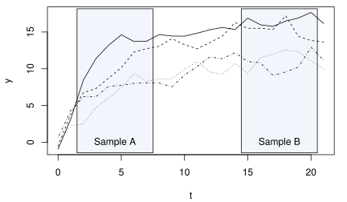

System GMM
- 앞에서에서 \(\rho\simeq 1\)일 때 Difference GMM에 문제가 있을 수 있다는 것을 보았음
Levels GMM
- 간단한 모형 \(y_{it} = \alpha + \rho y_{it-1} + \mu_i + \varepsilon_{it}\)를 고려하자.
- 문제의 근원은 \(\mu_i\)를 소거하기 위한 방정식 차분에 있음(정보량 감소)
- 그렇다고 하여 \(\mu_i\)를 소거하지 않고 수준식 \(y_{it} = \alpha + \rho y_{it-1} + (\mu_i + \varepsilon_{it})\) 그대로 사용하면 설명변수 \(y_{it-1}\)이 오차항 \(\mu_i + \varepsilon_{it}\)와 상관되어(\(\mu_i\)의 존재 때문) 내생성 문제가 발생
- \(E(y_{it} \mu_i)\)가 모든 \(t\)에서 동일하다(일종의 “stationarity”)고 가정한다면, \(\Delta y_{it-1}\)가 \(\mu_i\)와 비상관이 되므로
〔\(E(\Delta y_{it-1} \mu_i) = E(y_{it-1} \mu_i) - E(y_{it-2}\mu_i) = 0\)이어서〕 , \(\Delta y_{it-1}\)을 \(y_{it-1}\)의 도구변수로 사용할 수 있음- Stationarity하에서 \(\Delta y_{it-1}\)은 \(\mu_i\)와도 비상관, \(\varepsilon_{it}\)와도 비상관
- 이처럼 level 방정식에 차분된 도구변수를 사용하는 것을 ‘수준 GMM’이라 함
- 이 수준식의 설명변수와 차분된 도구변수는 항상 강하게 상관되며, 약한 도구변수의 문제가 발생하지 않음
- 이는 stationarity라는 강한 가정이 있기 때문
System GMM
- 시스템 GMM(System GMM)은 차분 GMM과 수준 GMM의 적률조건들을 시스템으로(종합적으로) 활용하는 추정법
- Stata에서는
xpdpdsys명령을 사용 - Random-Walk일 때 시스템 GMM으로 문제를 해결
unitroot.dta는 여러분이 앞에서 만든 데이터셋으로서 \(y_{it} = y_{it-1} + \varepsilon_{it}\)에 따라 생성한 자료이다. \(\rho\)의 참값은 1이다. 이 자료에 대하여 다음을 실행하라. 어떤 추정에 어떤 문제가 있으며, 어느 추정이 더 나은지 설명하라.
xtabond 추정을 하라. 추정값은 참값인 1에 가까운가? 연도별 더미로써 Random-walk의 문제가 해결되는가? 참고: 연도별 더미변수들을 포함시키려면 우선 tab year, gen(yr) 명령에 의하여 yr1, yr2 등의 더미변수를 생성한 후 이 더미변수들을 exogenous한 설명변수로 포함시켜야 함. xtabond y yr3-yr10
-
앞의 소득과 민주주의 예제로 돌아가서 시스템 GMM 추정을 하자.
코드 보기
시스템 GMM에 필요한 조건
- 수준 GMM이 제대로 작동하기 위해서는 \(\Delta y_{it-1}\)과 \(\mu_i\) 간에 상관이 없어야 함
- 시스템 GMM은 차분 GMM과 수준 GMM을 결합하여 사용하는 것이므로, 시스템 GMM이 제대로 작동하기 위해서도 \(\Delta y_{it-1}\)과 \(\mu_i\) 간에 상관이 없어야 함
- 만약 \(\Delta y_{it-1}\)과 \(\mu_i\)가 상관되면 수준 GMM은 inconsistent하고 시스템 GMM도 inconsistent
- 언제 \(\Delta y_{it-1}\)과 \(\mu_i\) 간에 상관이 없는가?
- \(\mu_i\)가 클수록 \(y_{it}\)는 궁극적으로 높은 수준에 도달할 것임
- 각 \(i\)마다 \(\mu_i\)에 의하여 결정되는 궁극적인 수준이 있는데, 만약 이 궁극적인 수준(stationary state)에 도달하기 이전이라면 \(\mu_i\)가 클수록 (더 높은 수준으로 가야 하므로) \(y_{it}\)의 증가폭도 평균적으로 더 크고 따라서 \(\Delta y_{it}\)와 \(\mu_i\)가 상관될 것임
- 이 궁극적인 수준(stationary state)에 도달하고 난 후에는 해당 수준에서 random fluctuation만 있을 것이므로 \(\Delta y_{it}\)와 \(\mu_i\)가 서로 비상관일 것임

- 데이터가 A에서 추출되었다면 \(\Delta y_{it-1}\)은 \(\mu_i\)와 상관되고, B에서 추출되었다면 상관되지 않음
- B와 같은 상태를 ‘Mean-stationarity’라 함
- \(|\rho|<1\)인 상황에서 시스템 GMM 추정량이 consistent하기 위해서는 패널데이터가 mean-stationarity 상태에 도달해 있어야 함.
Arellano-Bond 추정량(Difference GMM)은 이를 필요로 하지 않음 - 만약 random walk라면(\(\rho=1\)), System GMM이 consistent하기 위해서는 개별적인 drift가 있어서는 안 됨
- System GMM의 consistency를 위해서는 \(y_{it}\)에 indicidental trends가 없어야 함(common trend는 period dummies로 잡을 수 있음)
실습
growth.dta 파일은 1960년부터 1985년까지 125개 국가의 경제 성장률에 관한 자료(Mankiw, Romer and Weil, 1992)에서 공산주의 국가와 OPEC 국가 자료를 삭제한 것이다. 다음 코드를 실행하고 이해해 보기 바란다.
use growth, clear
d
xtset
xtsum
* model: ln(gdp) on ln(gdp_1), ln(saving), ln(pop), year dummies
gen y = ln(gdp)
gen s = ln(saving)
gen n = ln(pop)
qui tab year, gen(yr)
xtabond y n yr3-yr26, pre(s) vce(r)
estat abond
xtabond y n yr3-yr26, pre(s) two vce(r)
estat abond
ivregress 2sls d.(y n) yr4-yr26 (ld.y d.s = l2.y l.s), vce(cl id)
xtdpdsys y n yr3-yr26, pre(s) vce(r)
estat abond
xtdpdsys y n yr3-yr26, pre(s)
estat sargan
xtdpdsys y n yr3-yr26, pre(s) two
estat sargan